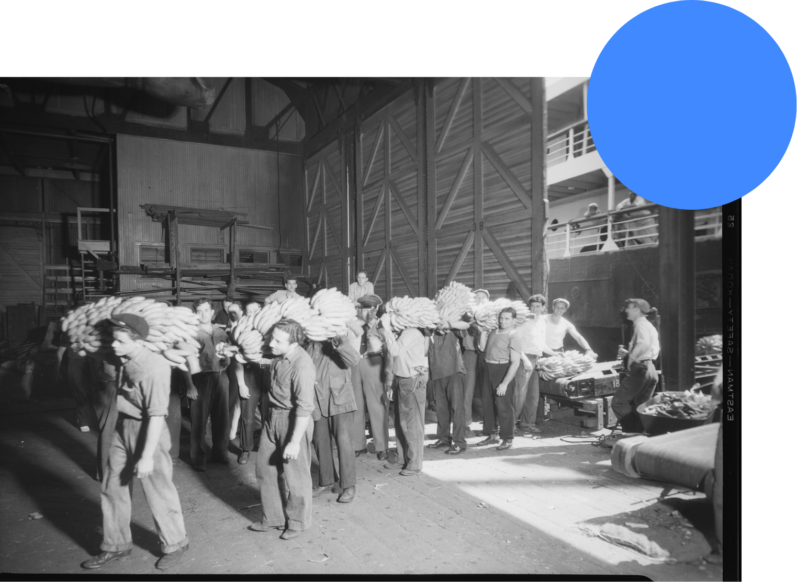

Fair Trade is an alternative trading partnership that is rooted in dialogue, transparency, and respect, and seeks a greater equality in all international trade.40 This trading partnership emphasizes the importance of the producer, and contributes to the sustainable development of areas where the product is grown or made. Fair Trade achieves this by offering better trading conditions and securing the rights of marginalized producers and workers.
The Fairtrade Certification System is run by a global certification body called FLOCERT, who ensures that social and environmental standards are being met by any producer that carries the Fairtrade mark. FLOCERT auditors are highly qualified, usually based in the countries and regions where producers are located, and familiar with local cultures, languages, and legal systems.41 However, FLOCERT is not the only certification body. Fair Trade products can also be found sporting the WFTO (World Fair Trade Organization) guarantee label.
For the purpose of this project, I’ll be focusing primarily on Fairtrade International.
This organization works in a few key ways:
1. It places an emphasis on the voices of farmers and workers by giving them 50% of the vote in the General Assembly, four seats on the Fairtrade International board, and representation on the Standards Committee which is in charge of regulating minimum prices and standards.
2. Producers who are partnered with Fairtrade International receive the Fairtrade Minimum Price. With conventional practices, farmers and workers receive fluctuating pay for their goods depending on external factors like unstable yields caused by changes in temperature, and have little to no say in the pricing of their product. With Fairtrade, banana workers are assured a decent price (and therefore decent pay) for the hard labour they put into growing their fruit. This allows Fairtrade workers to have a consistently stable income rather than one that often fluctuates due to measures beyond their control.
3. Fairtrade International also provides producers with the Fairtrade Premium which comes from the sales of Fairtrade products. This premium is essentially extra money that producers receive, allowing them to invest in development which in turn raises their workers’ quality of life. Some farmers may choose to invest this money in new work equipment to raise their productivity and ease labour intensity; others may use it to make the switch to organic farming, or for improving local schools and healthcare in the community. Fairtrade leaves the decision-making to the farmers and workers as they know what their communities need best, and allows them to invest the Fairtrade Premium wherever they see a need. 
Fairtrade International conducts an internal research report every year, the Fairtrade MEL Program, in which date is collected from all Fairtrade certified producers and published annually. This allows the organization to see how the Fairtrade system is impacting the products and countries where certified producers are present, and the areas that they need to improve on. Currently, Fairtrade International recognizes some pressing issues they need to work on such as tackling power imbalances in supply chains, building effective climate change resilience within communities, as well as empowering women farmers and workers.
Fairtrade International, however, isn’t without fault. In 2014, they revised their Hired Labour Standard after various complaints regarding the unionizing of workers. This revised version strengthened the right of workers to freely organize, collectively bargain, and gave workers more control over how to spend the Fairtrade premium.42